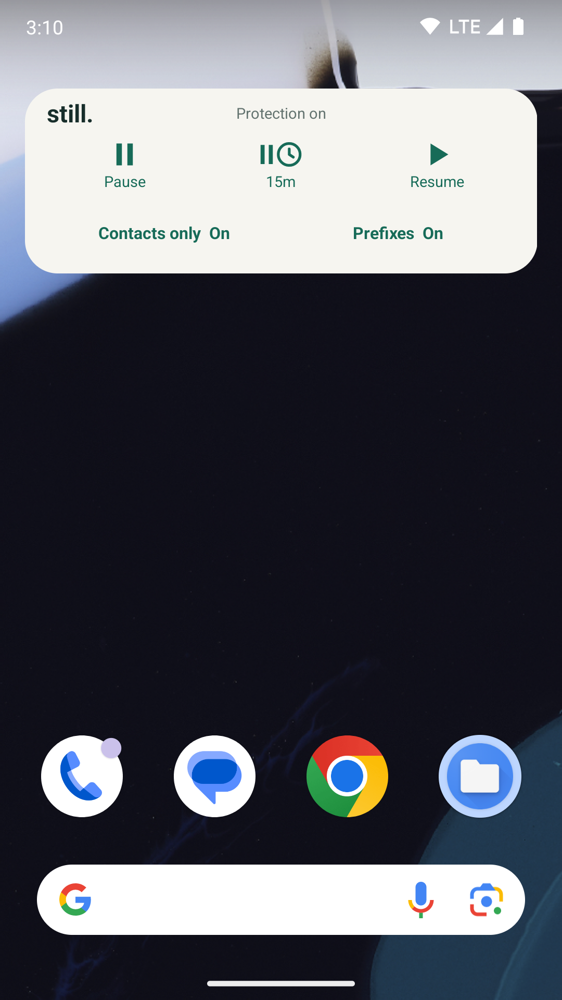

Contacts only
Allow saved callers and reject visible unsaved numbers.
Keep your default phone app. Still adds an extra layer of call-blocking controls, with simple rules that run on your phone.
Contact support
Quick controls, right on your home screen.
Allow saved callers and reject visible unsaved numbers.
Block a number series. Switch each rule on or off as you need it.
Pause, take a 15-minute break, or resume from the app or widget.
Android 10 or later and a device supporting call screening are required. Only one call-screening app can be active at a time.
Check that Still holds the call-screening role, protection is not paused, Prefix mode and the matching rule are enabled, and the number format matches. Hidden caller IDs are not evaluated. Saved contacts stay allowed unless you opt into applying prefixes to them; failed contact lookups allow the call.
Use Import prefixes, or open a JSON attachment with Still. Review the entries before confirming. Enable all new prefixes is off by default. Importing never switches global Prefix mode on.
Contacts access is optional for the number tester and saved-contact rules. Notification permission is optional for the control card. Still does not request Internet, storage, SMS or system call-log access.
Clear blocked-call history in Calls, remove prefixes in Home, or clear Still's storage in Android Settings. Exported attachments must be deleted in the receiving app or folder.
Email getonlabs@gmail.com with your phone model, Android version, Still version and the steps that caused the issue. Please redact private phone numbers and contact names.
If your email app does not open, use Gmail or copy the address into your preferred email service. Nothing is sent until you send the message yourself.
Read the privacy policy →